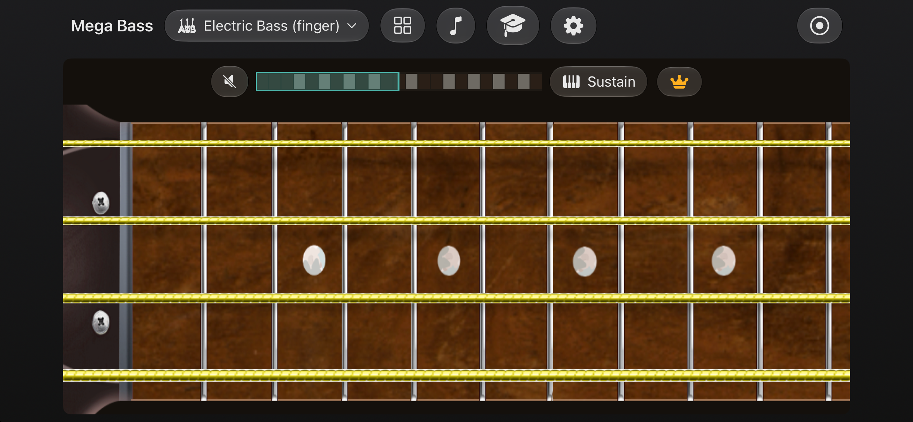
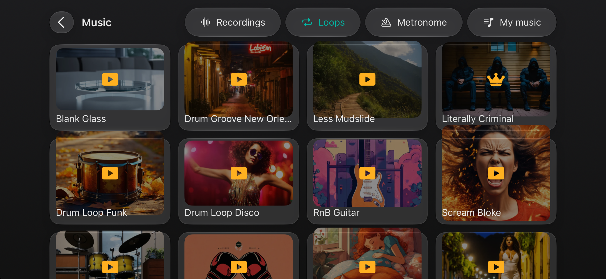
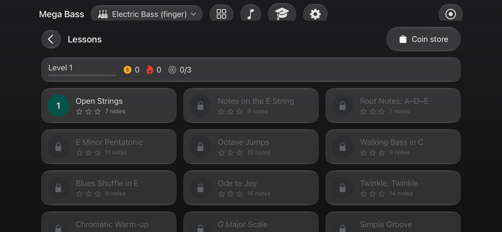

Responsive four-string bass
Play a 22-fret neck with multitouch, glissando, sustain, haptic feedback, and expressive SoundFont audio.
Made for iPhone and iPad
Play a responsive four-string bass, explore new sounds, practice with loops, record performances, and learn the fretboard step by step.

Built to be played
Mega Bass combines responsive multi-touch performance with practice and learning tools.
Play a 22-fret neck with multitouch, glissando, sustain, haptic feedback, and expressive SoundFont audio.
Explore basses and other instruments and keep downloaded sounds available on your device.
Practice timing and groove with loops in different styles or use the built-in metronome.
Capture your playing, listen back, and keep musical ideas ready for later.
Follow notes across twelve lessons, earn XP and coins, and build a practice streak.
Choose a theme and adjust scale, volume, and haptics to match your playing style.
Practice your way


Ready when you are
Mega Bass is designed for landscape play on iPhone and iPad.